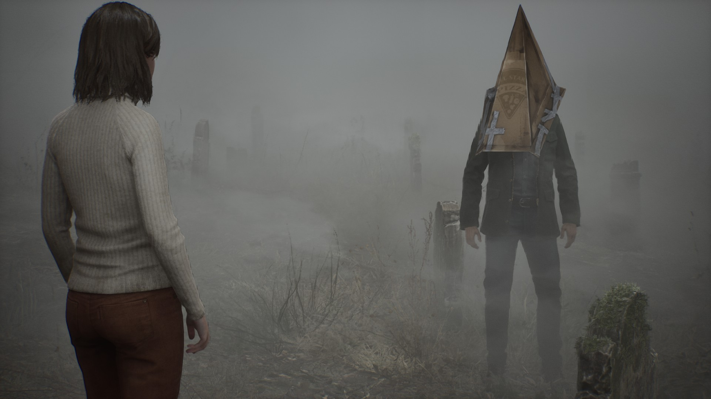

Games! I have loved video games since I was a child.
Nothing can help you pass the time as effectively while feeling productive as video games do! They can be entertaining, educational, and soul-tearing among other things. They can be works of art or absolute jokes, depending on your playstyle or general preferences. Whether by myself or with other people, gaming is my go-to hobby without a doubt.
Games I have the most playtime in:
- online games such as Dead by Daylight
- strategy games such as Sid Meier's Civilization V
- shooting games such as Payday 2 and Left 4 Dead 2
- open world survival such as 7 Days to Die
- horror games such as the Silent Hill and Resident Evil series
- intense RPGs such as the Kingdom Come: Deliverance, Dishonored, and Fallout series
- JRPGs such as the Tales of, God Eater, and Yakuza series
- farming and life simulators such as the Harvest Moon series
- random games like Clue and the Loathing series

Explore more of this site to obtain a feel for Morgan's state of being and reasons for living.